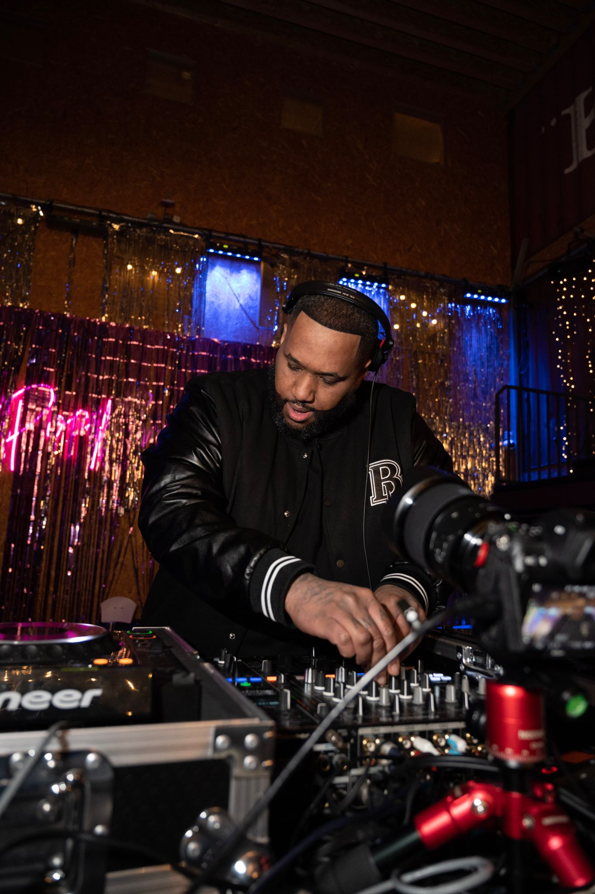
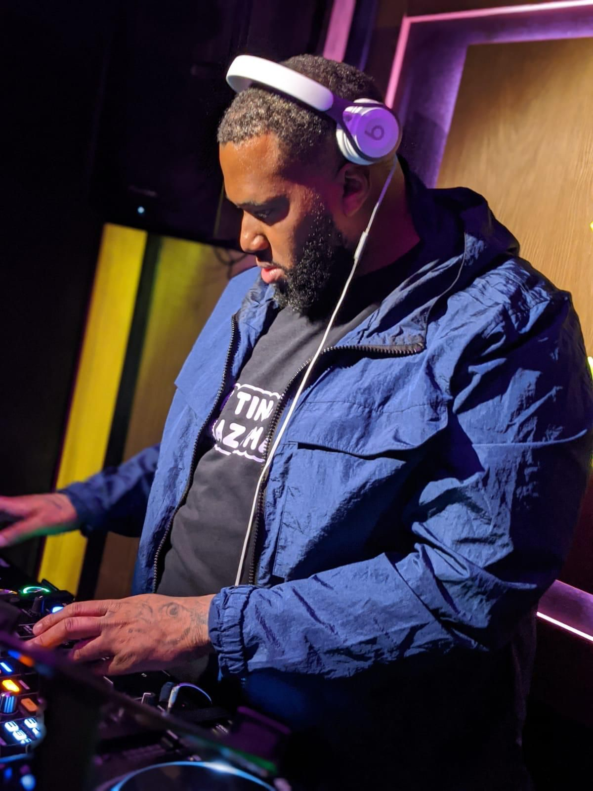
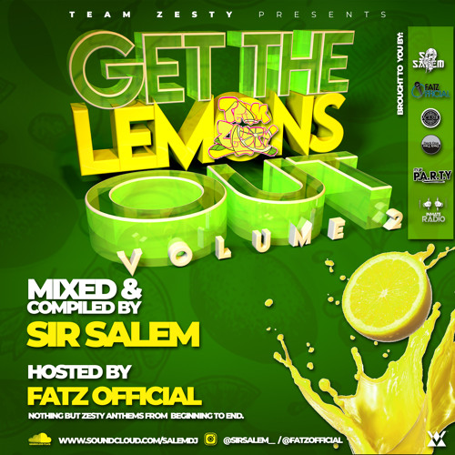

DJing in the London underground for more than 20 years, Sir Salem’s musical history runs parallel with the history of the city’s pirate radio culture, and the contemporary developments of Black British music. He’s been through jungle, garage, grime and house alongside many seminal MCs, DJs and collectives in these genres, playing in the same foundational pirate radio studios and shopping at the same east London record shops – many long defunct, some still going strong.
Despite his lengthy stint behind the decks, it’s only within the last few years, as he says himself, that things have really taken off and his bookings have remained consistent. This hasn’t made him jaded, in fact it seems more the opposite. Holding down a busy job in security and investing practically all of the rest of his time into music, it’s become an essential release from the daily grind, somewhere he can live out the values that are most important to him, like collaboration and collectivity. He makes it part of his mission to give dedicated, talented people the push and promotion they deserve. When I spoke to Mad One, and in my conversations with many other DJs, Sir Salem’s name repeatedly came up as a supportive, integral figure in his corner of the scene.
Sir Salem’s DJing is notable for his willingness to dig deep for the freshest amapiano and hybrid bass-heavy productions. He could attest to the number of times I’ve asked him for track IDs, along with many other people either commenting on his livestreams or rushing up to the decks in person. He values dubplate culture, with its special versions, VIPs and one-offs, and in this interview describes how he expresses this by building a personal catalogue of music.
There’s a lot to learn from Sir Salem’s outlook and perceptions, both for new DJs and established names in the scene. He’s an analytical person, who shares many valuable reflections on why livestreaming shifted London’s house music ecosystem, how upcoming DJs have made an impact, and the way some music scenes are versus how they could and should be.
NKC: How did you get into DJing, what’s your musical background?
Sir Salem: Growing up, my dad used to have one turntable, loads of vinyls and a big soundsystem in the front room. As a kid, I was always intrigued and interested, but I never really asked him about that side of things. How it really all started for me was that I used to hang out with a group of boys that were a good few years older than me, and one of them was a garage DJ. I remember going to his house, watching him on the turntables, and I was like, ‘yeah, I want to get into this.’ I was just proper interested in the whole thing, I wanted to be involved.
The first decks I bought were a second hand pair of Soundlab belt drives. They were horrible to mix on bruv. Trying to learn on them, it was difficult. But over the years I spent a lot of time in my room practicing on vinyls and just got better.
NKC: Was it garage that you started off with then?
Sir Salem: Yeah, the first two genres I indulged in when I first started was garage and jungle. There used to be a shop in Bethnal Green called Total Music. I used to go there, Rhythm Division in Bow and Paul For Music in Whitechapel. I indulged in going Uptown and Blackmarket on the odd occasion. But those were the main three because I grew up in east London, so they’re the closest.
NKC: Did you DJ at parties during these times, or was it just at home?
Sir Salem: Growing up, I started off just practicing in my room. The first ever radio station I was on was Supreme FM in Brixton, when I was 15. At the time, So Solid Crew were on the station as well. I started off there, then there was another station in south called Flashback, I was on there, and then another one called Entice FM, and then I came back over to east London. I played on a station called Raw Mission, and then I did Live FM UK where I met people like Mad One, Petchy, and a few other people that I’ve connected with over the years.
A couple years down the line, I met Formula Musiq. We became friends via Twitter, I think I found him because he posted a remix that he done. It was Blackberry Messenger days, so we first connected via BBM and then I used to send him clips of me mixing daily and he used to send me clips of him making music. He’s the reason I got into making music, he’s the one that showed me the basics and stepped me into that journey on the producer side. Before that, I didn’t have a clue, I was just a DJ. Once we connected, we were on Flex, before Flex became Flex FM, up until 2014. That’s the last MP3 I’ve got on my SoundCloud of us doing a show.
There’s been a variety of stations over the years that I’ve been on. But in all honesty, in the younger years I could count on my hand the amount of raves we did – there wasn’t many. There were plenty of house parties, but that’s the truth. It’s only since just before lockdown, when I started going on Deja Vu for a little while, doing the odd cover show and a month’s residency on there, that everything started to pick up.
Then, obviously, lockdown came in and slowed the process of things, but I just stayed consistent. I did long livestreams and built up a fanbase. Slowly but surely, I made a lot of connections.
The best thing I could say about lockdown is that I made a lot of musical friends, and it opened my eyes to a lot of new talent. Because obviously, I’ve been DJing 20+ years now, and I’ve met so many good DJs throughout the lockdown that I would have never probably known of before that. A lot of DJs did livestreams but some DJs stood out via their livestreams, and I feel like that was the key element.
When you’re doing a livestream, it’s about interacting and keeping your audience with you. Because Instagram’s not like Twitch, where you can just leave the music on in the background. You’ve got a harder task because you have to keep that audience in that app in order for you to have the numbers. To have 30 to 40 people glued to what you’re doing, that’s a good thing, and it shows that you’re keeping them entertained.
NKC: Why have livestreams been so important in the London house scene?
Sir Salem: You’re in the comfort of your home, or you’re in the comfort of a studio. For the DJs that are up and coming and building their confidence in their surroundings and environment, being in front of a big crowd, or even just a good volume of crowd, it creates pressure. I know a lot of people struggled up and down with mental health via lockdown and going forward, so to have that, on top of being a DJ and having too many people around you, it’s a lot for the brain to take in. So it was crucial for certain people to just be themselves and grow within a smaller environment – in their own home, via a camera. People were allowing themselves to get comfortable and confident, so that when they’re getting to the point where they’re playing out a lot, they have that confidence built already.
For example, Shotime started during lockdown and he’s killing it. Hats off to him, he’s elevated. Now he’s recently done his own event in Croydon Boxpark, and that’s coming from someone who just used to rave.
A lot of the newcomers stand out because of their energy. Some DJs out there, it’s more of a popularity thing. No disrespect to some people, but when you’re a popular DJ already, staying popular isn’t hard. Sometimes it’s just about knowing the right people and being around the right people. I feel like for some of these newcomers, it’s harder because they’re not popular, so more people are asking, ‘what is it that you bring to the table?’
How you present yourself is key: if you don’t present yourself right when you meet people, or just in general, that can tarnish you within a second. When you want to come into something where there are a lot of DJs, especially in London – London has a lot of DJs – it’s hard for you to stand out if you don’t conduct yourself in certain ways. A lot of the DJs that I’ve met recently, they’re good energy, and good energy will draw in a lot of people.

NKC: How did you get from jungle and garage to the music you’re playing today?
Sir Salem: After jungle and garage, I met Karnage, when I was around 16/17, through one of my best friends that I grew up with. We used to go to the Roll Deep studio near Limehouse station on Cable Street sometimes, because I also knew Danny Weed from primary school. When him and Target were in the studio I used to go there to collect tunes off of them. The catalogue of music I had grew with the times, so it was jungle, garage, grime…
Then, funny enough, Karnage showed me a Geeneus CD where he was playing soulful and funky house – it was more like the Cure and the Cause, Katy B, them type of tunes. When I first heard it I was like ‘nah, I’m not really into it,’ but he was like ‘nah bruv, listen to it a couple more times.’
There was one song – I can’t remember, it was a male vocal – that drifted me into that genre of UK funky, soulful, tribal house, and honestly I stayed there for about eight or nine years afterwards.
NKC: There was a time after the initial popularity of UK funky when some people were doing this harder, bassier sound – Razzlerman and LR Groove, Ill Blu, Formula, Alpha 27, Jook 10 – and then it died off. Why do you think that got left behind when everyone drifted into deep and tech house?
Sir Salem: I’m glad that you touched base on this specific part, because thinking back, I was involved in UK funky when it was them and people like Mr Solo. I had all of that stuff. In my attic I’ve got my CD pack, and it’s jammed with that whole era of funky, from the beginning up to the point of X5 Dubs and all of those people that got involved. I covered that whole catalogue and then it started to die down. Then we were on a deep tech, bassy house, jackin’ house vibe. It was weird, it changed up and then a lot of the producers went into house.
I weren’t really a big fan of deep and tech house, but I probably played some of it for maybe three years. I went to Malta to DJ over there and I played that, because that’s what they asked for. Then I was supposed to go back the following year to DJ in Malta, then lockdown cancelled it.
After that, I stumbled into the whole Afro house and amapiano sound. My cousin Mr Beckz went to a Supa D rave and they played MDU aka TRP – ‘Sghubu’. He played me a recording and asked if I knew the tune, and I said ‘I don’t, but I know a man who will.’ I’m good friends with Truce, who’s on houSupa, because me and him went to secondary school together. He sent me the name of the song, and then after that I fell in love with that whole different sound and started to do my research. Then it took me to where I am now.
When I first started, because I was still in that funky element, I was playing amapiano a lot faster than I should have.
NKC: That’s one of the debates that has been going on, a lot of people want DJs to keep it slow.
Sir Salem: In the summer I got a residency for a place called Asembe. It was a spot in Wembley and it was strictly amapiano, so I think I was doing my sets at like 115bpm. The only reason I was able to slow down and adapt to something so slow was through DJing with DJ Papercuts. I met him during the lockdown and we linked up a couple times, did a couple back to back sets where he was like, ‘bro, you need to slow it down.’
Don’t get me wrong, if anybody asks what bpm I play my sounds at, I’d say anything from 115 to 122. When me and Formula first started to create our sound, we were doing more of the 124s, because we wanted it to be in between the UK funky and the ama sound. I was still involved in both elements in my sets, so it made sense for us to build songs that fitted in between the bpms. Whereas now, when we’re in the studio and we do sessions and stuff, it’s more 117-118, maybe the odd 120. That’s as fast as it gets.

NKC: When I listen to your sets, you’ve got a lot of fresh music that people haven’t put out yet. Who are some of your go-to artists for new music?
Sir Salem: Bro, I’ll let you in on a valid secret that people probably don’t know about me: a lot of my stuff is made just for me. Not everything, but I have a big folder of songs that are strictly made for me, and they’re only for me unless I share them with somebody else. Don’t get me wrong, I do have my go-tos – say Mad One, Razzler, LR, Growzie. When I’m preparing for anything, they’re my main four, I will always hit them up.
NKC: So you pay for the tracks that people build just for you?
Sir Salem: Yeah, 100 percent, I always pay for the work.
At the end of the day, I can’t expect to get exclusives for free. Music isn’t free. A lot of DJs have this mindset of, ‘I should get music for free,’ and to be dead honest with you, I was that guy ten years ago. But as I’ve grown up, I’ve learned that nothing is free. And if I want to stand out, then yeah, I’ll pay for it.
When you’re hitting up producers to ask for music, they want to see that you’re prepared to support their music. It doesn’t necessarily mean they’re going to charge you, but because they see that you’re prepared to spend money, that’s when you’ve automatically started the relationship on a good note.
Living life isn’t that straightforward, so support the cause. A lot of time and effort goes into making music, you don’t just sit on the computer, knock it out in 20 minutes and say, ‘yeah, track’s done.’
No discredit to anyone, but I don’t want to be playing in a club and we’re all playing similar sounds, that’s just not me. Even when I was doing UK funky, I was digging for tracks above and beyond to make sure that my selection was not your average. I always had rare tunes that not many DJs had their hands on. And that’s what it’s about, it’s about you mastering your craft so that people know that you don’t play around when it comes to your selection, because selection is everything.
What’s the point of playing everything that everybody else is going to play?
NKC: I guess some people just want to hear stuff they already know, whereas maybe you’re aiming for the connoisseurs with that style of selection.
Sir Salem: I don’t have a problem with playing certain things that I know people want to hear, but outside of that, you’re going to hear a lot of stuff where you’re like, ‘what’s that?’
For me, it’s not about being the best. I love music – I don’t do it to be famous, I don’t do it to be popular – I just love music as a passion. It’s my go-to outside of reality. I couldn’t go a day without listening to music. So when I get on the decks, I do it because I’m passionate and I enjoy it. Everything else is a bonus. Any of the bookings, the opportunities that I’ve had over the past couple of years, I’m very grateful for. Sometimes I sit there and think, how did all these things happen?
Through the funky era, and all the other eras, nothing really worked, it was never my time. Nothing never progressed. A lot of people say, ‘why didn’t you give up?’ I didn’t give up because I just love music. Some people do it because they want to see doors open, they want to see themselves get bare bookings for this and that. I don’t do it for that purpose. Even if I didn’t take the radio station show that I’m on, I’d still be going to Pirate for a 3-4 hour mix, because I need that, that’s my me time.
NKC: What do you call the scene and sound at the moment – ‘UK amapiano’, ‘UK Afro house’, or anything else?
Sir Salem: I don’t put a name on the scene, because it compliments so many different genres of music, i.e. funky, tribal, Afro, amapiano. Even the stuff that me and Formula make, I don’t class it under a genre, it’s just us making music to compliment the sound we like. It just fits into what I play and that’s basically it.
With the scene, because there are so many genres within it – there’s Afro tech, tech house, elements of deep house, people playing ama and other stuff – I can’t really put a name on it. A lot of club nights in the scene are mixing up many different genres of DJs into one rave.
On the scene in general, I do like how there are a lot of new faces – newcomers, new DJs, old DJs. They’re out there and they’re on the scene. But I do honestly feel that with certain brands, they’re not branching out as much. Some brands seem like they just keep it in-house, or they keep it within a circle or a group.
The brands that I’ve seen versatility in are Looney Choonz – they always bring in more than just the residents – and the Dungeons LDN. They both do well, they have variety.

NKC: How did Team Zesty and Get the Lemons Out start off, and what are you trying to do with those brands?
Sir Salem: Originally, Team Zesty was Play and Fatz. But because me and Play was DJing a lot together, I somehow got brought into the mix. Then Play left because he joined Nasty Bros, and then me and Fatz continued and just ran with it.
Every year, me and Fatz do a compilation called Get the Lemons Out, which comes out on pancake day. Me and Fatz’ birthdays are within the same week, so when we did our first event at the end of May, we called the brand Get the Lemons Out. We done May, we done July, then we did a joint collab over carnival bank holiday weekend.
With Get the Lemons Out, it’s basically us promoting the people that aren’t really getting a look-in when it comes to bookings. We want to give them that promo, that push, to get them comfortable in a rave environment, and also for other people to pay attention and take notice of them going forward.
The first two events were in a bar in Tottenham Court Road. They’re rave events, putting on a lot of people that I’ve either seen growing during the lockdown, or people that have been out here trying to get a look-in. We’re on the lineup as well, but the main thing is pushing as many people as we can, and people that we really think are talented and deserve to get that limelight anywhere they can.
Even with my radio show, I didn’t take the radio show because I want to do radio, I did it because it allows me to bring on new people, interview them, get an understanding of their journey, and showcase them to people who are already my so-called fanbase. A lot of people, once things start kicking off for themselves, they’re just in it for themselves and they’re running with that. Each to their own, but for me, I’ve been in music for a long time and I know how long I’ve been in it where nothing happens. A lot of these new DJs just want somebody to pay attention and take notice. It’s key to have some people who are happy to promote them and showcase them in any form possible. And I want to be part of that.
NKC: Is there anything that would make the scene better for you?
Sir Salem: I feel like the only thing that would better the scene is more collaborations, more opportunities…
On this subject, I want to big up Everything is Rhythm. I like what they’re doing. For their most recent lineup, they’re bringing parts of different movements into one event. That’s what I like, because it’s putting people that probably wouldn’t be on each other’s lineups all on one lineup.
That’s the main message that I would like to portray, that everyone should be bringing each and every person to the same table – the same lineups, the same events. Because everyone’s going to have their own fanbase, but why can’t everybody also join and grow?